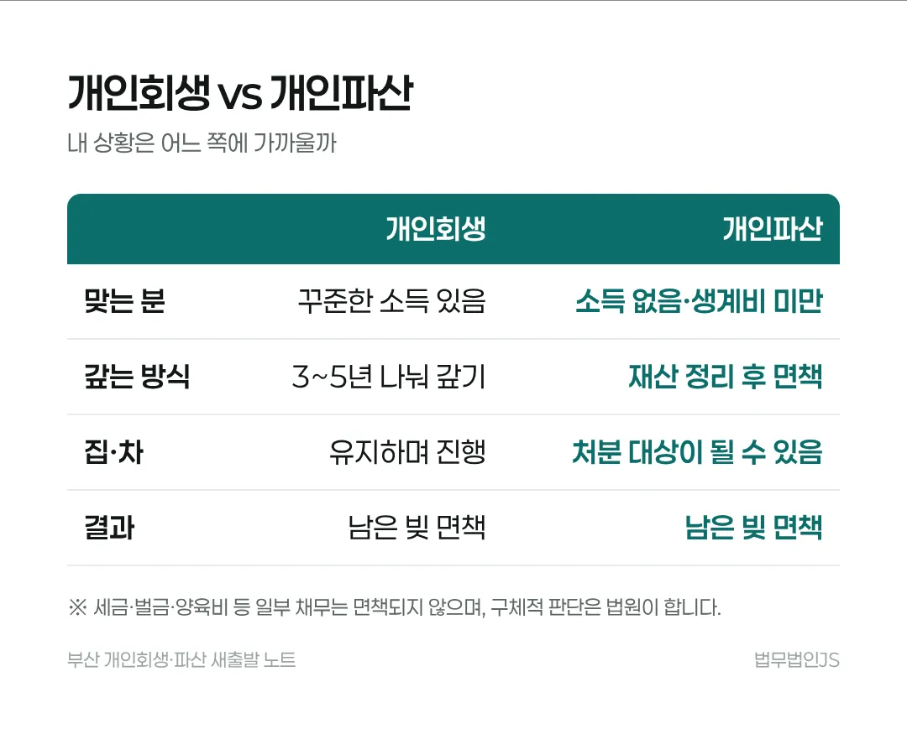

개인파산은 어떻게 진행되고, 면책이 안 되는 경우는 언제인가요?
개인파산은 신청 → 법원 심사(필요하면 파산관재인 조사) → 재산 정리 → 면책 결정 순서로 진행합니다. 재산을 숨기거나 도박·낭비로 빚을 키운 경우 등은 면책이 허가되지 않을 수 있습니다.
3줄 요약
- 소득이 없거나 생계비에 못 미치면 회생보다 파산·면책을 먼저 검토합니다.
- 재산 은닉, 도박·낭비로 인한 과다 채무, 허위 자료 제출 등은 면책불허가 사유가 될 수 있습니다.
- 세금, 벌금, 양육비, 고의 불법행위 손해배상 등은 면책돼도 남습니다.
기한과 숫자
2023년 4월부산회생법원 취약채무자 신속면책 시행시행 당시 기준
70세 이상신속면책 대상 예기초생활수급자·중증장애인 포함, 조건 있음
개인파산은 어떤 순서로 진행되나요?
- 법원에 파산과 면책을 함께 신청합니다.
- 법원이 소득·재산·빚이 생긴 과정을 살펴봅니다. 사건에 따라 파산관재인이 재산을 조사합니다.
- 정리할 재산이 있으면 정리해 채권자에게 나눕니다.
- 문제가 없으면 남은 빚에 대해 면책 결정이 납니다.

더 빨리 끝나는 방법도 있나요?
부산회생법원은 2023년 4월부터 기초생활수급자, 70세 이상, 중증장애인처럼 소득과 재산이 거의 없는 분이 파산관재인 선임 없이 파산 선고와 동시에 면책을 받을 수 있는 취약채무자 신속면책 제도를 시행했습니다. 대상 조건이 있어 해당 여부는 따로 확인해야 합니다.
면책이 안 될 수 있는 경우는 언제인가요?
- 재산을 숨기거나 가족 명의로 돌려 둔 경우
- 도박이나 지나친 낭비로 빚을 크게 늘린 경우
- 법원에 사실과 다른 자료를 낸 경우
이런 사정이 있어도 법원이 사정을 고려해 면책하는 경우가 있으므로, 숨기지 말고 상담에서 먼저 알려야 대응 방향을 잡을 수 있습니다(채무자 회생 및 파산에 관한 법률 제564조).
면책돼도 남는 빚은 무엇인가요?
세금, 벌금, 아이 양육비, 일부러 남에게 피해를 준 손해배상금 같은 빚은 면책돼도 남습니다(같은 법 제566조). 내 빚 가운데 무엇이 남는지 미리 알고 시작하는 것이 중요합니다.
자주 묻는 질문
파산하면 가족에게 빚이 넘어가나요?
아닙니다. 보증을 서지 않았다면 가족이 대신 갚을 의무는 없습니다.
파산하면 직업에 제한이 있나요?
일부 직업은 파산선고로 자격이 제한될 수 있지만 면책이 확정되면 풀립니다(복권). 해당 여부는 상담에서 확인합니다.
회생과 파산 중 무엇이 맞는지 모르겠습니다.
소득이 법원 생계비보다 많은지가 첫 기준입니다. 재산과 빚이 생긴 사정까지 함께 봐야 정할 수 있습니다.
근거 법령과 판례
- 채무자 회생 및 파산에 관한 법률 제564조면책 허가와 불허가 사유
- 채무자 회생 및 파산에 관한 법률 제566조면책되지 않는 채권
- 채무자 회생 및 파산에 관한 법률 제574조복권
- 관련 글면책을 받아도 남는 빚이 있나요?
일반적인 법률 정보이며 개별 사건에 대한 법률 의견이 아닙니다. 구체적인 결론은 소득, 재산, 채무에 따라 법원이 정합니다. 법무법인JS 광고 · 광고책임변호사 최원진